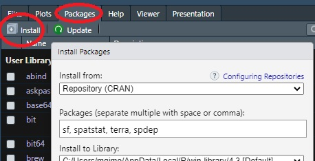

install.packages("sf")
install.packages("spatstat")
install.packages("terra")
install.packages("spdep")Loading and visualizing data in R
Data for this tutorial can be downloaded from here. Don’t forget to unzip the files to a dedicated folder on your computer.
R is a data analysis environment. RStudio is a desktop interface to R (sometimes referred to as an integrated development environment-or IDE for short). Unlike most desktop environments you have been exposed to so far, R does not take instructions from a point-and-click environment, its instructions are provided by simple lines of text.
Launching the RStudio software
RStudio software comes in two flavors: a server based application and a desktop based application. Some of you may have already used the server based version of RStudio that you access via a web browser. In this course, we will make use of the desktop version of the software (i.e. an installed version of RStudio and R). Note that you can install R and RStudio on your personal computer if you want to tackle these exercises independent of the computer lab. For instructions on installing R and RStudio, see here.
Click on the windows icon and launch RStudio.
Setting up the R environment
Installing packages
This course will make use of four packages: sf which is used to load, manipulate and visualize vector files; terra which is used to load, manipulate and visualize raster files; spatstat which will be used for point pattern analysis; spdep which will be used to analyze spatial autocorrelation in the data.
You can install packages in one of two ways: via command line or via the RStudio interface.
Option 1: Command line
If you choose to install the packages via the command line, type the following lines of code in the console, one line at a time.
Option 2: RStudio interface
If you choose to install the packages via RStudio’s pull-down menu, click on the Packages >> Install tab and list the packages to be installed in the Packages field separated by commas.

If you are given the option to either have R compile some of the libraries or to accept the binaries, opt for the compilation option.
Opening a new R script
If an empty R script file is not open in RStudio open a new one now.
R scripts are usually saved using the .R extension. For this tutorial, you may choose to name the script r_intro.R. Make sure to save this script on a regular basis as you add/modify pieces of code.
Setting an R session’s work space
If you plan to read or write files from/to a directory, you might find it beneficial to explicitly define the R session’s project folder. To set a session’s working directory, go to Session >> Set Working Directory >> Choose Directory. In this example, you will want to set the working directory to the folder that houses the sample dataset.
Loading (activating) packages
Installing packages under your user profile is a one-time process, but to access the package contents in a current R session you must explicitly load its contents via the library function.
In this exercise, we will load and prep the data for a point pattern analysis using the spatstat package. We will therefore not need to load the spdep package which won’t be used until we tackle spatial autocorrelation in later exercises.
library(sf)
library(spatstat)
library(terra)Note that you might see Warning messages and red text in the output console when loading the above packages. This should not be a problem.
Loading GIS data into R
Loading shapefiles
Note that R will recognize vector data models stored as shapefiles, but it will not recognize GIS files stored in geodatabases.
First, we will load the Massachusetts polygon shapefile into R and save the contents of that shapefile to an object called s2. Note the use of the assignment operator <- which assigns the output to its right to the object to its left. The name of the shapefile must end with the *.shp extension, but note that the function understands that the shapefile consists of multiple files.
s2 <- st_read("MA.shp")Reading layer `MA' from data source
`C:\Users\mgimond\Documents\github\es214_support_tutorials\Getting_started_with_R\MA.shp'
using driver `ESRI Shapefile'
Simple feature collection with 1 feature and 4 fields
Geometry type: MULTIPOLYGON
Dimension: XY
Bounding box: xmin: 623157.2 ymin: 4577879 xmax: 922141 ymax: 4756659
Projected CRS: NAD83 / UTM zone 18NNOTE: if you get the error message
Error: Cannot open "MA.shp"; The file doesn't seem to exist., then you probably did not properly set the working directory (see earlier step) or, you have a syntax error in the file name.
R can work with spatial objects in different internal formats. spatstat’s functions require that a specific spatial format be used. The MA states layer will be used to define the study extent. This will require that it be converted to an owin formatted object for use with spatstat. We will make use of the as.owin function to convert the s2 object to an owin object.
w <- as.owin(s2)The coordinate unit associated with the spatial object inherits the underlying coordinate system’s map units–meters in this example. Such small units may make it difficult to interpret the output of some operations given that some analyses may generate very small values (i.e. density based analyses) or very large values (i.e. distance based analyses). We will therefore convert the map units from meters to kilometers using the rescale.owin() function. Note that 1000 m = 1 km.
w.km <- rescale.owin(w, 1000)The second parameter in the rescale.owin() function, 1000, tells R to divide the planar unit by 1000.
Next we will load the Walmart stores shapefile (Walmarts.shp) using the same functions, but instead of storing the shapefile as a polygon boundary, we will convert the point shapefile to a ppp formatted point object.
s1 <- st_read("Walmarts.shp") Reading layer `Walmarts' from data source
`C:\Users\mgimond\Documents\github\es214_support_tutorials\Getting_started_with_R\Walmarts.shp'
using driver `ESRI Shapefile'
Simple feature collection with 44 features and 40 fields
Geometry type: POINT
Dimension: XY
Bounding box: xmin: 640627.2 ymin: 4614803 xmax: 869353.2 ymax: 4738331
Projected CRS: NAD83 / UTM zone 18Np <- as.ppp(s1) # creates a ppp object
p.km <- rescale.ppp(p, 1000)By default, R will adopt a rectangular extent for the point data.
Given that we will be defining the extent to match that of the Massachusetts boundaries, we will need to explicitly define the study extent for the point object.

Window(p.km) <- w.kmNote the uppercase W in the function Window()!
There is one more thing that we will need to do that will make the data behave with spatstats tools: remove the layer’s attribute information (attributes are also known as marks in the point pattern analysis world). The point attributes will not be needed here since our interest is in the pattern generated by the points and not by their attribute values.
marks(p.km) <- NULLLoading Raster Files
Next, we will load the population density raster file pop_sqmile.img using the rast() function from the terra package, then we’ll convert it to an im object recognized by spatstat and name the object r.km once re-scaled.
img <- rast("pop_sqmile.img") # Load raster file
df <- as.data.frame(img, xy = TRUE) # Convert to XYZ data table
r <- as.im(df) # Convert XYZ table to im object
r.km <- rescale.im(r, 1000)Visualizing Spatial Objects
We can plot the raster and overlay it with the point layer. Several plotting options are available including the base plot function which will be used in this tutorial. However, there are many R packages that will help improve the “look” of a map including tmap and ggplot2.
In the following code chunk, we will plot the point data. We’ll assign a yellow fill color to the point symbol. The point symbol type is defined by the pch = 21 parameter.
plot(p.km, pch = 21, bg = "yellow", main = "Walmart stores")Point symbol types are defined by a number. The above point symbol is number 21. Other point symbols available in R are shown below:

To plot a raster, you can use the image function (as well as the plot function). Here, we’ll adopt a built-in color scheme using the hcl.colors function.
image(r.km, main = "Population density", col = hcl.colors(50, rev = TRUE))
In the following chunk of code, we will plot both the raster and point layers. To add a “layer” to an existing map, include the add = TRUE parameter.
image(r.km, main = "Population density", col = hcl.colors(50, rev = TRUE))
plot(p.km, pch = 16, add = TRUE)
This wraps up this tutorial.